Mesh Creation#
These examples demo how to read various file types into PyVista mesh objects, create meshes from NumPy arrays, and how to create primitive geometric objects like spheres, arrows, cubes, ellipsoids and more! Once a mesh is loaded, it is ready for plotting with just a few lines of code - explore these examples to get started with using PyVista for your data.
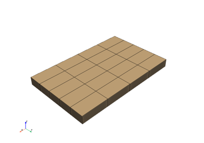
Creating an Explicit Structured Grid
Creating an Explicit Structured Grid
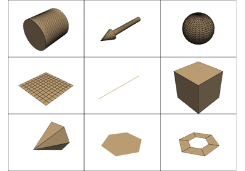
Geometric Objects
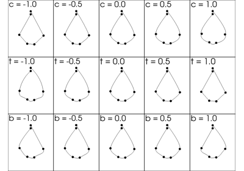
Create a Kochanek Spline
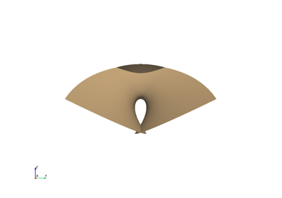
Parametric Geometric Objects
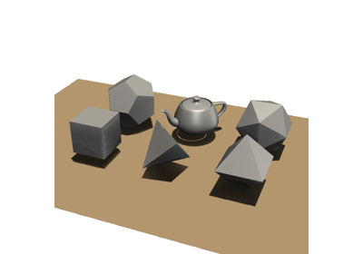
Platonic Solids
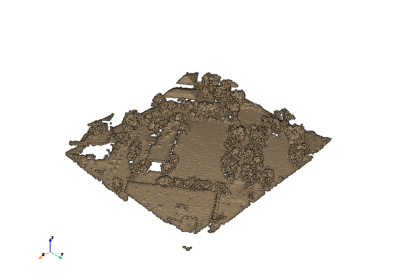
Create Point Cloud
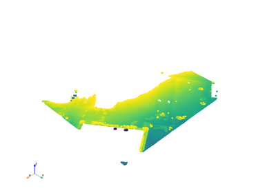
Create a PointSet
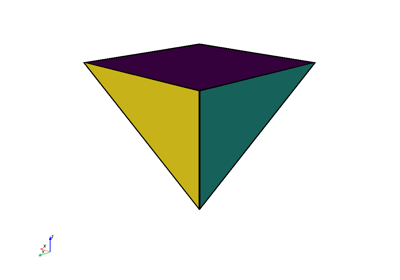
Create PolyData
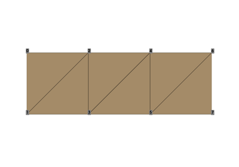
Triangle Strips
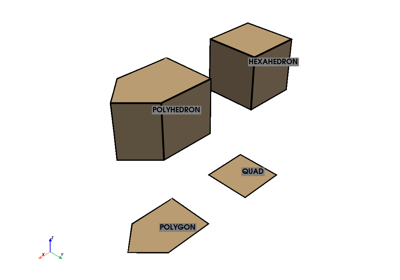
Unstructured Grid with Polyhedra
Unstructured Grid with Polyhedra

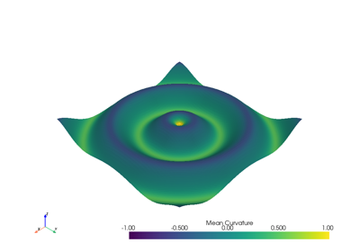
Creating a Structured Surface

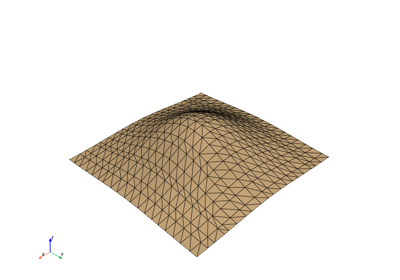
Create Triangulated Surface
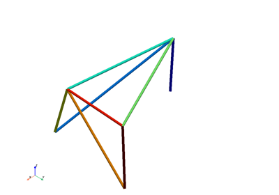
Plot Truss-like FEA Solution with Cylinders
Plot Truss-like FEA Solution with Cylinders
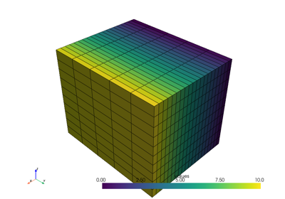
Creating a Uniform Grid


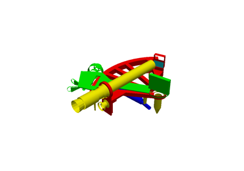
Working with VRML Files
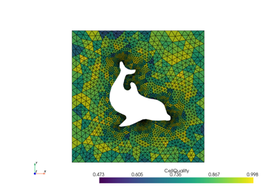
Read FEniCS/Dolfin Meshes
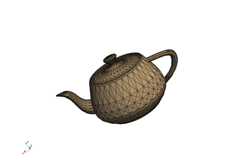
Load and Plot from a File
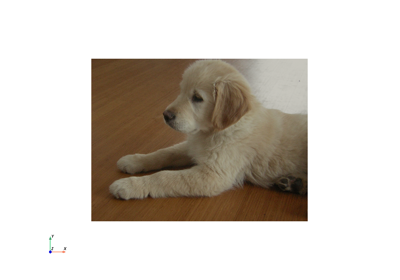
Read Image Files

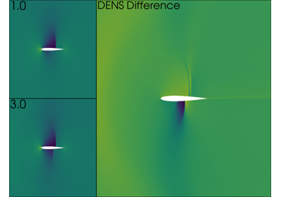
Load data using a Reader
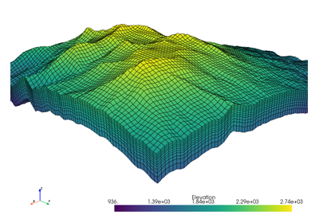
Terrain Following Mesh
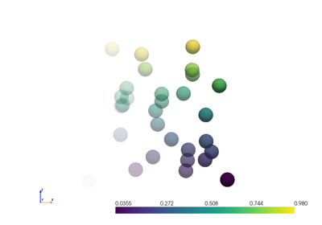
Wrapping Other Objects